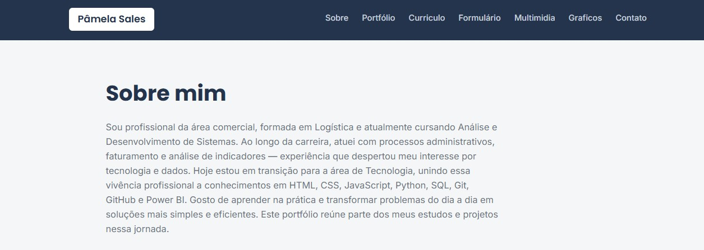

ArmazemX
Controle de estoque para um armazém.
Sou profissional da área comercial, formada em Logística e atualmente cursando Análise e Desenvolvimento de Sistemas. Ao longo da carreira, atuei com processos administrativos, faturamento e análise de indicadores — experiência que despertou meu interesse por tecnologia e dados. Hoje estou em transição para a área de Tecnologia, unindo essa vivência profissional a conhecimentos em HTML, CSS, JavaScript, Python, SQL, Git, GitHub e Power BI. Gosto de aprender na prática e transformar problemas do dia a dia em soluções mais simples e eficientes. Este portfólio reúne parte dos meus estudos e projetos nessa jornada.
Controle de estoque para um armazém.

Site pessoal para exibir meu trabalho, currículo e habilidades.